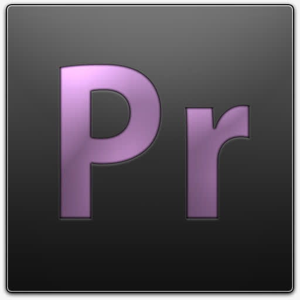

| PR | ||||||
| ||||||
adobe premiere简介 Adobe Premiere是一款常用的视频编辑软件，由Adobe公司推出。现在常用的版本有CS4、CS5、CS6、CC 2014、CC 2015、CC 2017、CC 2018以及CC2019版本。Adobe Premiere是一款编辑画面质量比较好的软件，有较好的兼容性，且可以与Adobe公司推出的其他软件相互协作。目前这款软件广泛应用于广告制作和电视节目制作中。 其最新版本为Adobe Premiere Pro CC 2019。是视频编辑爱好者和专业人士必不可少的视频编辑工具。它可以提升您的创作能力和创作自由度，它是易学、高效、精确的视频剪辑软件。Premiere提供了采集、剪辑、调色、美化音频、字幕添加、输出、DVD刻录的一整套流程，并和其他Adobe软件高效集成，使您足以完成在编辑、制作、工作流上遇到的所有挑战，满足您创建高质量作品的要求。 |